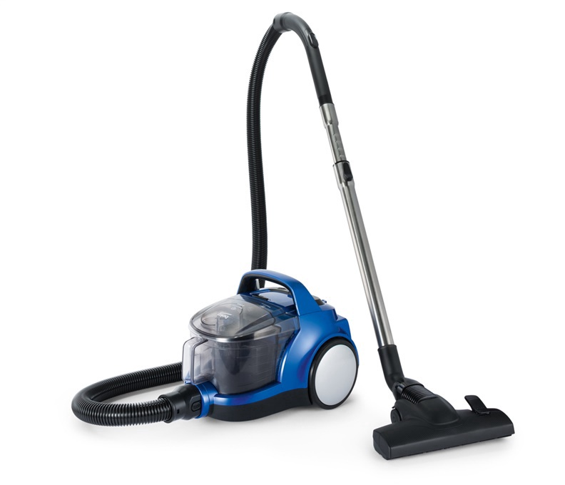
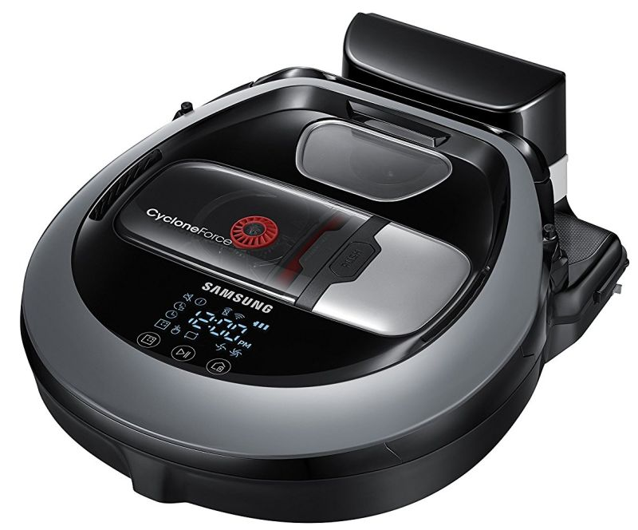
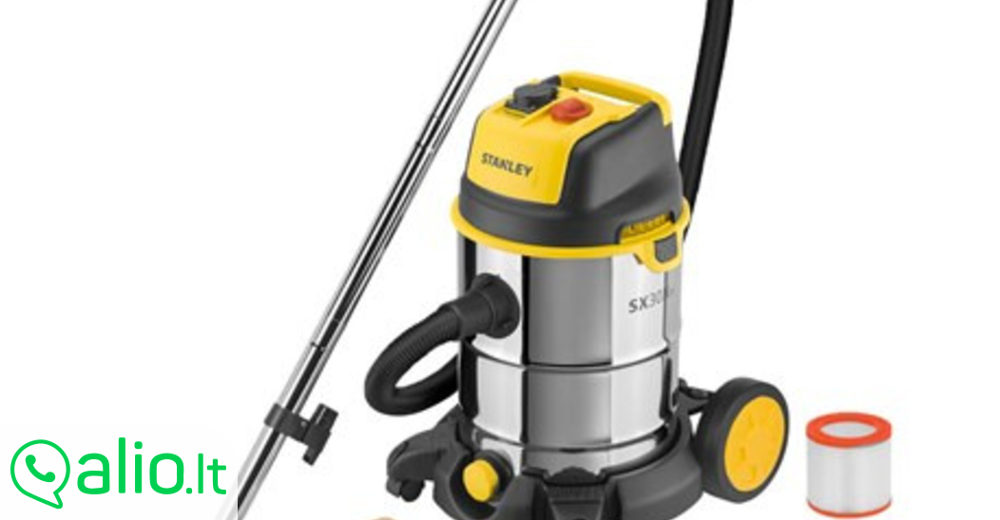
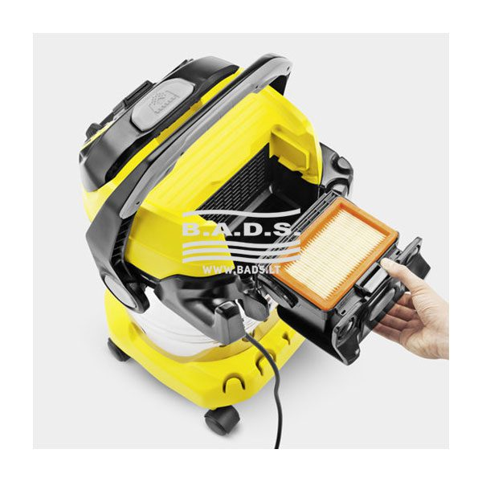
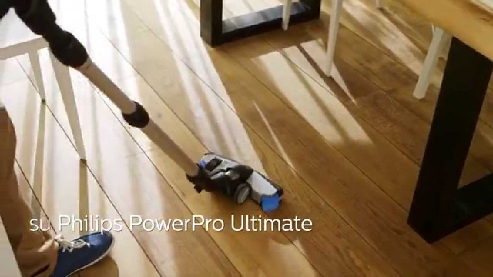
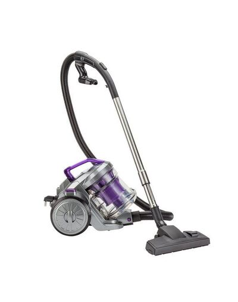
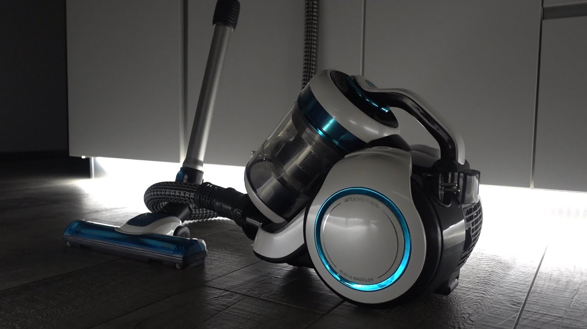
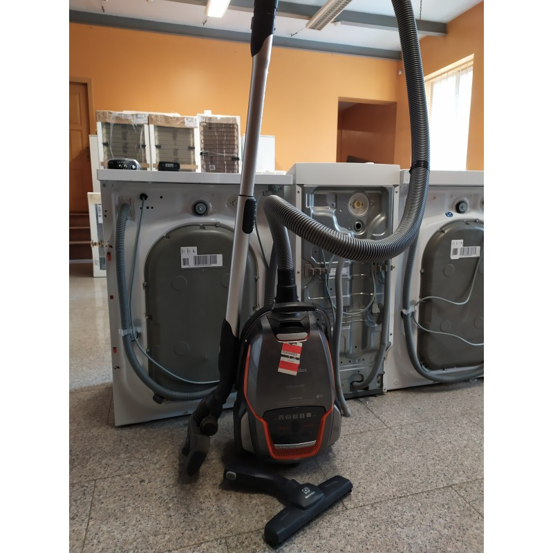
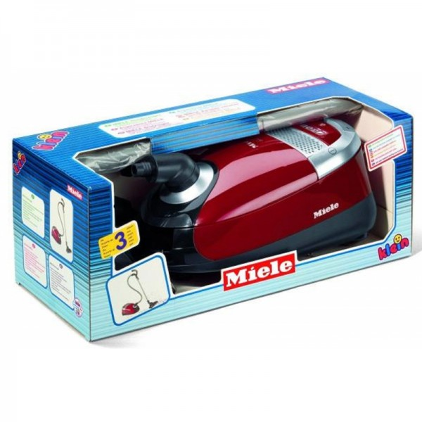
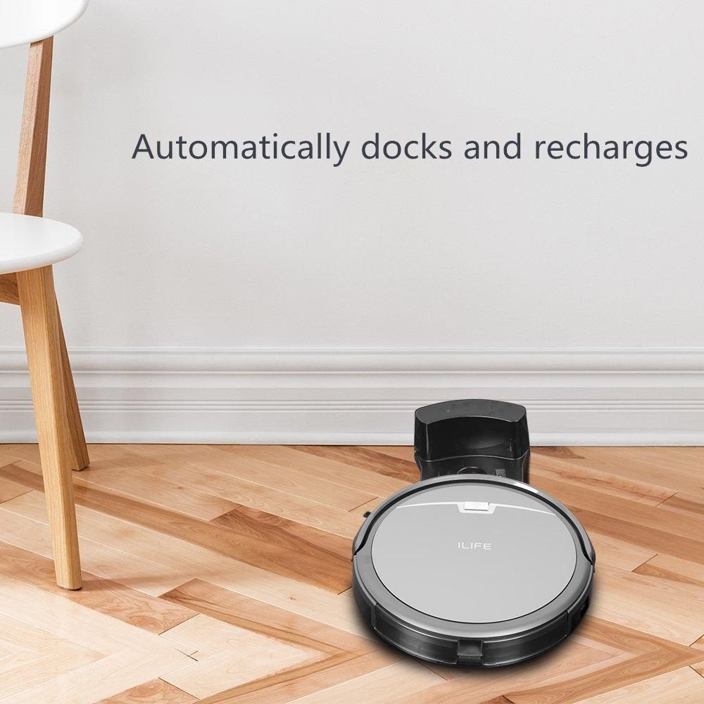

dulkių siurblys
About me
Past Articles
- DULKIŲ SIURBLIAI | DULKIŲ SIURBLYS Akcija internetu Žema ...
Dulkių siurblys-šluota Cecotec Conga Rockstar Micro 8000. 99,99 € ... - Patogūs belaidžiai dulkių siurbliai | Electrolux
Dulkių siurblys, be jokios abejonės, palengvina buto valymą, kadangi surenka visas dulkes bei purvą. Kai kurie jų modeliai turi ypatingą filtravimo sistemą bei šepečių mechanizmą, leidžiantį išvalyti net gyliai į kilimą įsigėrusį purvą, taip pat puikiai susitvarko su gyvūnų šeriais. - Cikloninis dulkių siurblys | Dulkių siurbliai | Senukai.lt
Dulkių siurbliai – nepakeičiami valymo įrenginiai namuose, biure ar kitose patalpose, kur kaupiasi nešvarumai bei dulkės. Dulkių siurblius rekomenduojama rinktis atsižvelgiant į tai, ko norite ir kur jį naudosite. Namuose puikiai tiks nedidelis dulkių siurblys su vandens filtru. - Dulkių siurbliai internetu pigiau | Namų technika ...
Thomas dulkių siurblys yra lengvai naudojamas ir tiesiog padaro tai, ko iš jų tikitės nesukeldami „netikėtų staigmenų“ ar diskomforto. Sauso valymo siurbliai su vandens filtru . Sauso valymo siurbliai . Profesionalūs - statybiniai siurbliai . Konteineriniai dulkių siurbliai . - Plaunami Dulkių Siurbliai. Drėgno Valymo Dulkių Siurbliai ...
Dulkių siurbimas be apribojimų: akumuliatorinis WD 3 Battery daugiafunkcis dulkių siurblys, priklausantis 36 V akumuliatorinių įrenginių platformai, su priedais įprastam grindų valymui ir rankiniam naudojimui. Baterija galima įsigyti atskirai. - Savaeigis dulkių siurblys robotas – Pakeiskite savo dulkių ...
dulkiŲ siurblys (sauso-drĖgno valymo) makita vc3011l, 1000 w. kodas: agdmakodk0005. kaina 203 00 ... - Dulkių siurbliai - Topocentras
Dulkių siurblys robotas gali šį darbą atlikti už Jus, kol Jūs tuo metu užsiimsite sau malonia veikla. Nors, atrodo, dar visai neseniai siurblys robotas buvo vertinamas kaip prabangos prekė, dabar toks dulkių siurblys prieinamas daugeliui šeimų ir sparčiai populiarėja. Robotas ... - Dulkių siurbliai | Buitinė technika | Senukai.lt
Xiaomi Mi Siurblys Robotas 279.99 € 249.99 € Daugiau; ILIFE V5S PRO 189.99 € Į krepšelį; ILIFE V7S PLUS 199.99 € Į krepšelį; Akcija! ILIFE W400 plaunantis grindų robotas 289.00 € 279.00 € Daugiau; Xiaomi Mi 2 Roborock S55 Siurblys Robotas 399.99 € Daugiau; Xiaomi Mi 2 Roborock Siurblys Robotas 389.99 € Daugiau; Akcija ... - Statybinių atliekų, pelenų siurbliai | ZEMAKAINA.LT
Kiekvienas dulkių siurblys pasižymi savo specifika, todėl rekomenduojama vadovautis gamintojo pateikta instrukcija ir dulkių surinkimo maišelį keisti taip, kaip joje nurodyta. Dulkių maišelių keitimo dažnis priklauso nuo to, kiek dažnai ir kokį patalpos plotą valote. - Siurbliai-ilife.lt: siurblys robotas | dulkių siurblys ...
Dulkių siurblys šluota SAMSUNG VS80N8076KC/SB POWERstick PRO. 0.0 (0) 0.0 iš 5 žv. 349,99 € ...
Menu
- DULKIŲ SIURBLIAI | DULKIŲ SIURBLYS Akcija internetu Žema ...
- Patogūs belaidžiai dulkių siurbliai | Electrolux
- Cikloninis dulkių siurblys | Dulkių siurbliai | Senukai.lt
- Dulkių siurbliai internetu pigiau | Namų technika ...
- Plaunami Dulkių Siurbliai. Drėgno Valymo Dulkių Siurbliai ...
- Savaeigis dulkių siurblys robotas – Pakeiskite savo dulkių ...
- Dulkių siurbliai - Topocentras
- Dulkių siurbliai | Buitinė technika | Senukai.lt
- Statybinių atliekų, pelenų siurbliai | ZEMAKAINA.LT
- Siurbliai-ilife.lt: siurblys robotas | dulkių siurblys ...
Photo gallery













Posted by Jack  Read more
Read more  Comments (15)
Comments (15)  2020.10.30 02:40
2020.10.30 02:40